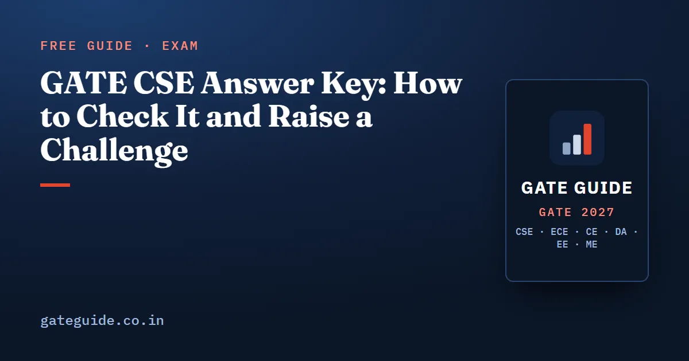

GATE CSE Answer Key: How to Check It and Raise a Challenge

The GATE CSE answer key is published in two stages: a provisional key that you can check and challenge, then a final key that is used for the result. To use it well you need three skills: matching your response sheet to the key, reading MCQ, MSQ and NAT entries correctly, and deciding whether a disagreement is worth a paid challenge. This guide teaches all three. Every date, window and fee below changes by year, so check the current notification on the official site.
In this guide
Key takeaways
- The provisional answer key comes out with your response sheet after the last exam session; the final answer key comes out after challenges are reviewed.
- The key follows the master question paper's order, which could differ from the order you saw on screen. Match questions by their text first.
- An MCQ key is one letter, an MSQ key lists every correct option (for example A;C), and a NAT key is a range such as 2.48 to 2.52.
- An MSQ scores only if your selection matches the key exactly; a NAT scores if your value lies inside the range.
- In recent years a challenge has cost 500 rupees per question for Indian candidates. Confirm the 2027 fee and refund rule in the current notification.
- Challenge only with a written argument you can defend, not because your answer differs.
The words you need first
Your response sheet is the record of what you entered for every question: the option or options you selected, the number you typed, or nothing. It is released on the GATE portal, called GOAPS, where you also registered.
The master question paper is the reference copy of your paper, with a fixed question order. In past years the organisers have said that the order of questions and options on a candidate's screen could differ from the master copy. The answer key is written against the master copy.
The provisional answer key is the organisers' first set of answers. Candidates may contest it during a short window. The final answer key reflects any changes made after experts review those contests, and it is the key your marks come from.
Remember: Your response sheet tells you what you entered. The key tells you what is correct. Neither tells you your marks until you match them question by question.
How to read each line of the key
Official GATE keys are tables. The columns in a recent key, from the GATE 2024 papers, were the question number, session, question type, section, the key or range, and the marks. Read each type differently.
| Question type | How the key is written | When your answer scores |
|---|---|---|
| MCQ | One letter, such as B | Your single choice is that letter |
| MSQ | All correct letters, such as A;C | You chose exactly those letters, no more and no fewer |
| NAT | A range, such as 2.48 to 2.52 | Your number lies inside the range, ends included |
| Any type | MTA | Everyone gets the marks, whatever they entered |
A NAT key with equal ends, such as 5 to 5, demands the exact value. A key such as 0.12 to 0.13 shows the tolerance for rounding. The MTA entry means marks to all; it appears only when the final key withdraws a question.
Worked example: checking three answers
Suppose your response sheet shows these three questions, already matched to the master paper. The keys are made up for this example.
- A 1-mark MCQ, key C. You chose C. Correct: .
- A 2-mark MSQ, key A;C. You chose A, C and D. One extra option makes the whole selection wrong. MSQ carries no negative marking, so you get , not .
- A 2-mark NAT, key 2.48 to 2.52. You typed 2.5. That lies inside the range: .
Your total for the three is marks. The full method for all 65 questions, including MCQ penalties, is the subject of a separate guide; the marking rules are in the exam pattern and marking scheme guide, which applies to every GATE paper.
Trap: Comparing answers by position. If your screen showed a question as number 23 and the master paper calls it number 31, comparing your answer 23 with key 23 gives a false mismatch. Match by question text.
Matching the response sheet to the key, step by step
Do this once, carefully, in a quiet hour after the key is out.
- Download your response sheet, the master question paper and the provisional key for your paper and session.
- For each question in your response sheet, find the same question in the master paper by its text. Write its master number beside it.
- Note the question type and marks from the key, not from memory.
- Mark each answer correct, wrong or unattempted using the table above.
- List separately every question where you believe the key itself is wrong.
The last list is your challenge shortlist. Most candidates find it empty, and that is the normal outcome.
Deciding whether a challenge is worth raising
A challenge, also called an objection, is a paid request to the organisers to change the answer to one question. It is filed through GOAPS during the window announced with the provisional key.
Raise one only when all of these hold:
- You can write the full solution and it leads to an answer other than the key.
- You have checked your reading of the question twice, including units and rounding instructions.
- You can support your argument with a standard textbook result, a counterexample, or a short calculation.
Do not challenge because your answer differs. On a CS paper, most apparent errors turn out to be a misread condition: a convention stated in the question, such as 1 KB meaning bytes, or a rounding instruction. The MCQ, MSQ and NAT strategy guide lists the conventions that most often cause these mismatches.
What a good challenge contains
A strong challenge is short. State the question number, the answer you believe is correct, and the reason in a few lines. Attach a document with the working if the portal allows it. Past coverage of the process describes a short text box and a document upload for each question.
In one line: A challenge is an argument, not a complaint; if you cannot write the argument in five lines, do not pay for it.
The fee and the window
The challenge fee, the window and the refund rule are set by the organising institute each year. In recent years, published coverage put the fee at 500 rupees per question for Indian candidates and 10 US dollars for NRI candidates, paid separately for each question. Sources have differed on whether the fee is refunded when a challenge is accepted. Treat all of this as history, and check the current notification on the official site before you pay.
The window has been short, a matter of days. Download your response sheet the day it appears so that the window does not close while you are still matching questions.
After the final key
The final key replaces the provisional one. Recheck any question that changed, including any marked MTA. Your raw marks from the final key are not your GATE score: in multi-session papers marks are normalised, and the score is a further scaled figure. The GATE score and normalisation guide explains that step, and the qualifying marks guide explains what the result is compared with. The result for GATE 2027 is due on 19 March 2027.
If you are preparing for 2027 now, the habit that makes answer-key day calm is the same one that wins marks: entering NATs at the stated precision and selecting MSQ options only when each can be justified. The book's ten full mocks come with keys in this same MCQ, MSQ and NAT format, so you can practise scoring yourself honestly before February.
Quick revision
- The provisional key and response sheet come first; the final key comes after challenges.
- The key follows the master paper's order. Match questions by text before comparing.
- MCQ is one letter, MSQ lists all correct letters, NAT is a range with both ends included.
- MSQ scores only on an exact match; a wrong MSQ or NAT costs nothing.
- MTA means marks to all for that question.
- Challenge only with a full written solution and a reason in a few lines.
- Recent fees were 500 rupees per question for Indian candidates; confirm the 2027 fee, window and refund rule in the current notification.
Frequently asked questions
When will the GATE 2027 answer key be released?
The organising institute releases a provisional answer key some days after the last exam session, together with candidates' response sheets, and a final key later, before or with the result. GATE 2027 exams run 6-7, 13-14 and 20-21 February 2027 and results are due on 19 March 2027. The answer key dates are announced separately, so check the current notification on gate2027.iitm.ac.in.
How much does it cost to challenge a GATE answer key?
In recent years reports put the fee at 500 rupees per question challenged for Indian candidates and 10 US dollars for NRI candidates, paid separately for each question. Coverage of the refund rule has differed between sources. The 2027 fee and refund policy will be set in that year's notice, so check the current notification before paying anything.
What does a range like 2.48 to 2.52 mean in the GATE answer key?
That is how a NAT key is written. Any answer you entered that lies inside the range, both ends included, is marked correct. A key such as 5 to 5 means the answer must be exactly 5. Values outside the range score zero, but a wrong NAT is never penalised, so it costs you nothing beyond the marks of that question.
What does MTA mean in the GATE answer key?
MTA stands for marks to all. When the final key marks a question MTA, every candidate in that paper receives that question's marks, whatever they answered or even if they left it blank. It usually follows a problem found in the question during review. It appears only in some papers and some years, and you cannot plan around it.
Why do the question numbers in my response sheet not match the answer key?
The answer key follows the order of the master question paper, while the order of questions and options on your exam screen could be different. Before checking anything, match each question in your response sheet to its master-paper number by its text, not by its position. A wrong match makes correct answers look wrong.
Sources
- GATE 2027 official website (IIT Madras)
- GATE 2027 question paper pattern (official)
- GATE 2024 DA final answer key, an example of the official key format (IISc Bengaluru)
- GATE 2026 answer key objection process (PW)
- Steps to challenge the GATE answer key (CollegeDekho)
- GATE 2024 final answer key explained (Practicemock)
Dates, fees and the syllabus are set by the GATE 2027 organising institute and can change. Always confirm at gate2027.iitm.ac.in.